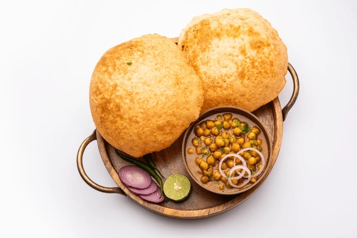

Chole Bhatore Recipe

Description
Chole Bhature is a popular North Indian dish that combines a spicy and flavorful chickpea curry (Chole) with fluffy, deep-fried bread (Bhature).
The chickpeas are simmered in a rich tomato-onion gravy, seasoned with aromatic spices like cumin, coriander, and garam masala, creating a hearty and satisfying meal.
The Bhature, made from all-purpose flour and yogurt, is soft on the inside with a crispy exterior, making it perfect for scooping up the curry.
This dish is often enjoyed for breakfast or lunch, accompanied by slices of onion, lemon wedges, and green chilies, making it a beloved favorite in Indian cuisine.
Ingredients:
For Chole(Chickpea Curry):
- 1 cup dried chickpeas (soaked overnight)
- 1 large onion (finely chopped)
- 2 tomatoes (pureed)
- 2 green chilies (slit)
- 1-inch piece of ginger (grated)
- 4-5 garlic cloves (minced)
- 1 teaspoon cumin seeds
- 2-3 cloves
- 1 bay leaf
- 1 black cardamom
- 1 teaspoon cumin powder
- 1 teaspoon coriander powder
- 1 teaspoon garam masala
- 1/2 teaspoon turmeric powder
- 1 teaspoon red chili powder
- 1 tablespoon chole masala (optional)
- Salt to taste
- 1 tablespoon oil
- Fresh coriander (for garnish)
For Bhature (Fried Bread):
- 2 cups all-purpose flour (maida)
- 1/4 cup semolina (sooji)
- 1/2 cup yogurt
- Salt to taste
- 1/2 teaspoon baking soda
- Oil for deep frying
Step-by-Step Cooking Instructions:
Chole (Chickpea Curry):
- Pressure Cook Chickpeas: Drain the soaked chickpeas and pressure cook them with 3 cups of water, salt, and a pinch of baking soda for 6-8 whistles until soft. Set aside.
- Prepare Masala Base: Heat oil in a pan. Add cumin seeds, cloves, bay leaf, and black cardamom. Once they splutter, add chopped onions and sauté until golden brown.
- Add Spices and Tomatoes: Add ginger, garlic, and green chilies. Stir for 2 minutes, then add tomato puree. Cook until the oil separates from the masala.
- Spice it Up: Add turmeric, cumin powder, coriander powder, red chili powder, and chole masala. Mix well.
- Combine Chickpeas: Add the cooked chickpeas with the water. Stir well and let it simmer for 15-20 minutes until the curry thickens. Add garam masala and garnish with fresh coriander.
Bhature (Fried Bread):
- Knead the Dough: In a bowl, mix flour, semolina, salt, and baking soda. Add yogurt and knead into a soft dough. Cover the dough and let it rest for 1-2 hours.
- Roll and Fry: Divide the dough into small portions and roll into discs (like puris). Heat oil in a deep pan and fry the bhature until golden and puffed up.
- Serve: Serve the hot bhature with the spicy chole, along with onion slices, lemon wedges, and green chilies.
Enjoy your delicious homemade Chole Bhature!